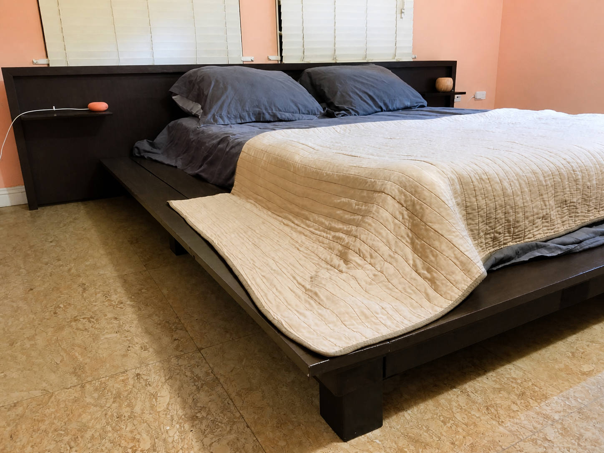
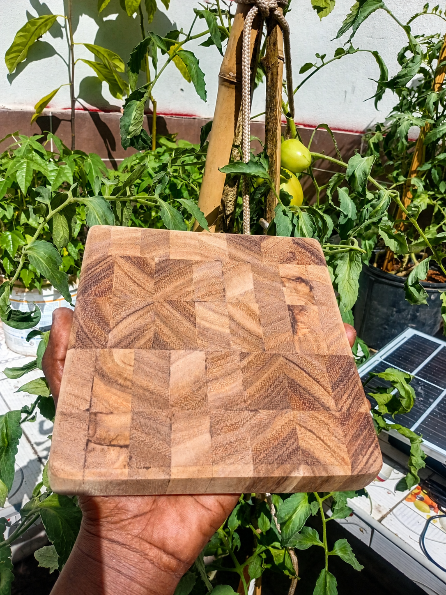
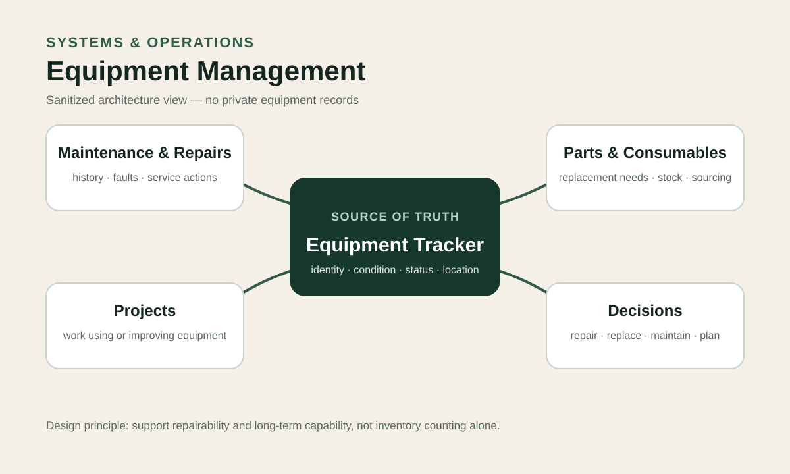
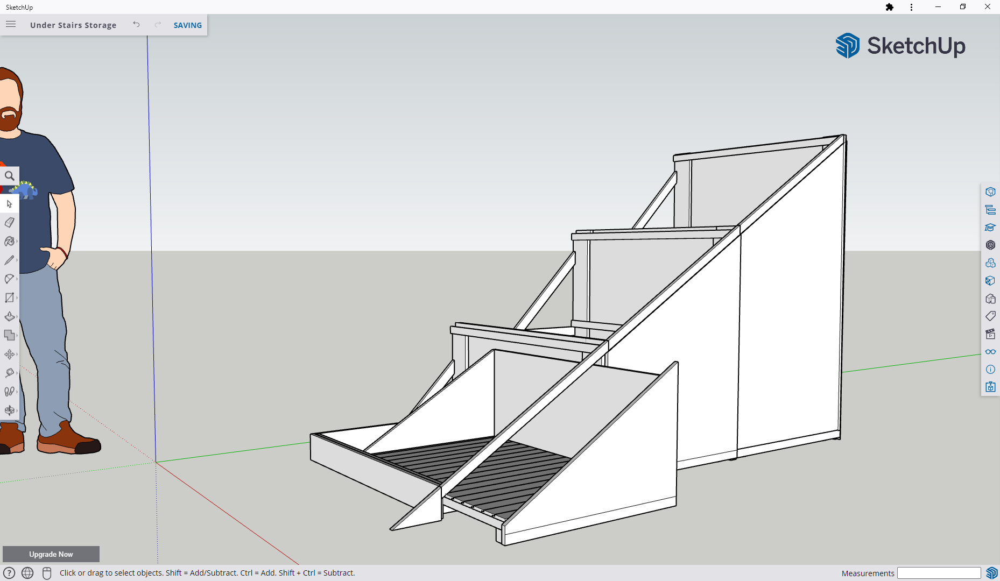

Systems & Operations
Workflow design, process improvement, project coordination, resource planning, Notion systems and practical operating structure.
Jamaica-based · Remote collaboration available
I work across operations, customer experience and quality, fabrication, 3D design, digital systems and practical land-based work. The common thread is turning messy real-world problems into something clearer, more useful and easier to maintain.
What I bring
Workflow design, process improvement, project coordination, resource planning, Notion systems and practical operating structure.
Custom fabrication, furniture and workshop systems, SketchUp, Tinkercad, prototyping and fabrication planning.
Quality analysis, coaching, service operations, feedback systems, trend identification and frontline support.
Research, structured prompting, AI-assisted product development, documentation, knowledge systems and iterative implementation.
Selected work
Where historical metrics are still being reconciled, the case studies use conservative descriptions instead of overstating outcomes.

A physical build carried through fabrication planning, procurement, modular construction, client-requested adaptation, transport to another parish and on-site installation.
The project demonstrates design thinking beyond the workshop: the finished object also had to be movable, adaptable and installable in a real space. A dedicated photo archive documents the completed physical result. This case is not currently presented as proof of original 3D-model authorship.

Built and used a more repeatable operating flow across enquiry, quoting, purchasing, production coordination and delivery for custom fabrication work.
The core value is the information path around the physical work: enquiry → clarify → quote → source → build → quality check → deliver. Older revenue and delivery metrics remain intentionally excluded until they are reconciled against dated records.
Defined a local-first product, data model and acceptance criteria, then directed AI-assisted implementation using Tauri, JavaScript and SQLite.
The current product supports multiple characters, local persistence, import/export and automated checks, with a Windows beta-candidate installer built. Cross-platform public-beta validation is still in progress.

Designed a linked operating system connecting equipment identity, maintenance history, parts and consumables, and related project work.
The system separates current equipment state from historical maintenance events and recurring parts needs. Savings and uptime improvements have not been quantified, so this case focuses on architecture and workflow quality.

Worked with customer interactions as operational evidence: reviewing against quality expectations, identifying recurring patterns and turning findings into usable feedback and coaching.
This case deliberately avoids disputed historical volume and performance metrics. The transferable method is interaction → evaluate → identify pattern → give feedback → reinforce → observe.

Developed a SketchUp-based remote design workflow using measurements, reference media, iterative modelling and fabrication-oriented planning.
This workflow is outreach-ready and has portfolio proof, but paid-client validation is still in progress. A separate named Miguel-authored model-to-output evidence chain is being assembled before stronger modelling claims are published.
Coordinate livestock care, land management, maintenance, property operations and practical infrastructure in a changing, resource-constrained environment.
The case focuses on keeping core systems functioning and making practical infrastructure improvements. It does not use unsupported yield, survival or land-restoration claims.
How I think
Does this increase the long-term capability of the whole system?
Start with what is actually happening, not what the process is supposed to look like.
Time, money, materials, people, tools, environment and maintenance shape the solution.
A useful system should be understandable enough to operate, adapt and repair.
Prefer modular, repairable and adaptable approaches over fragile one-off fixes.
Make enough to test the idea against reality, then improve from what happens.
About
I am a Jamaica-based maker, systems thinker and entrepreneur working at the intersection of practical design, operations, sustainability and technology.
My background has moved through customer service and quality, fabrication and small-business operations, teaching and lab work, farm operations, 3D design and digital systems. My technical foundation also includes two years of Computer Science study at the University of Technology, Jamaica, with a minor in Information Technology.
That range can look unrelated on paper, but the working pattern is consistent: understand the problem, map the constraints, create a practical intervention, implement it, and learn from what happens next.
Experience at a glance
Livestock · land management · property operations · maintenance · practical infrastructure
3D printing · laser cutting · electronics · project-based learning · lab operations
Quoting · customer communication · purchasing · fabrication operations · production coordination · delivery systems
Interaction review · quality feedback · coaching · service-process support
Quality assurance · coaching · training · customer-service operations
Projects & consulting
I am most useful where a problem crosses more than one domain and needs both structured thinking and practical execution.
Remote & flexible roles
I am open to roles where a systems-minded generalist can improve how work gets understood, coordinated and delivered.
Contact
If the challenge involves operations, systems, 3D design, fabrication planning, customer experience, practical organization or an interdisciplinary project, I am happy to have a conversation.
Jamaica · Remote collaboration available